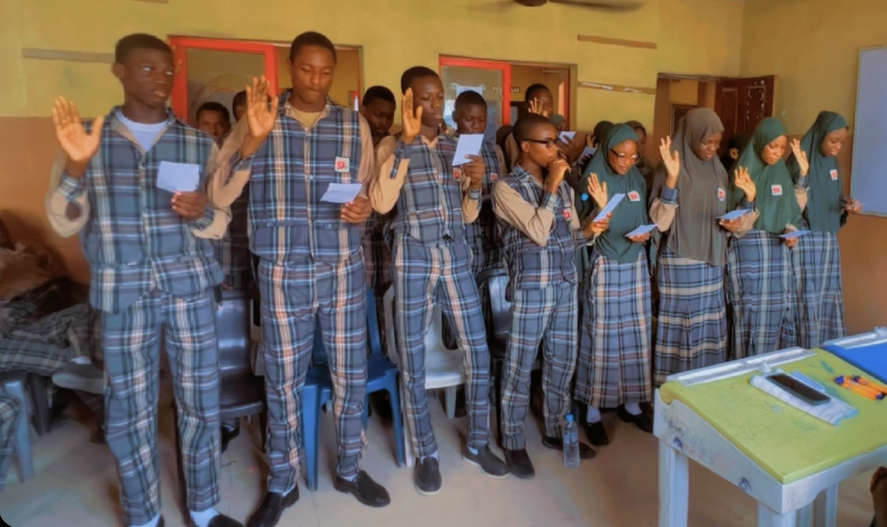
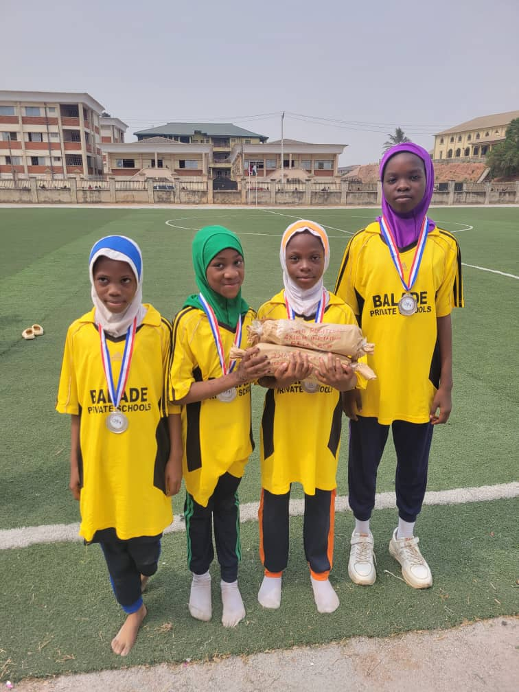
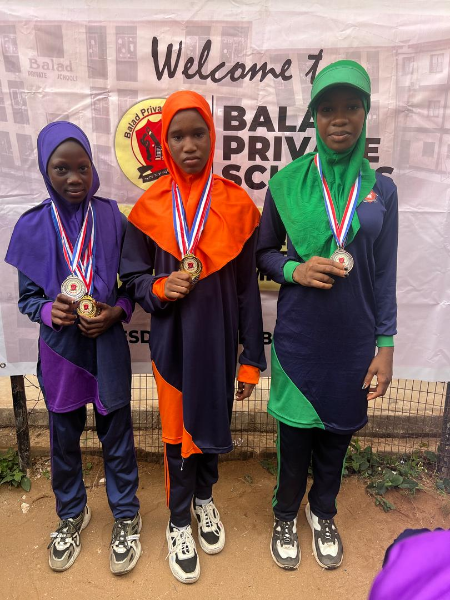
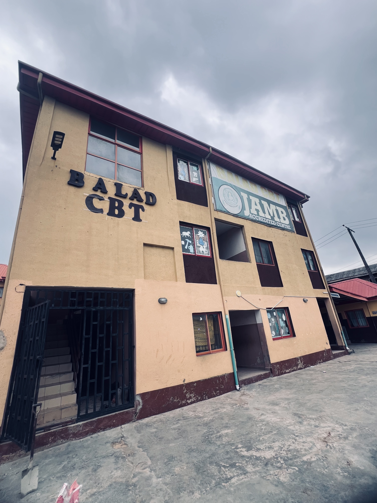

Modern Classrooms
Well-ventilated classrooms designed for focused and effective learning.
Pre-Crèche • Crèche • Nursery • Primary • College • CBT Centre
"Nothing but Success"Well-ventilated classrooms designed for focused and effective learning.

Practical spaces that support scientific discovery and experimentation.

A supportive environment for reading, research and independent learning.

Facilities that encourage teamwork, fitness and healthy development.

Technology-supported learning for digital skills and computer-based examinations.

A welcoming and secure environment where learners can thrive.